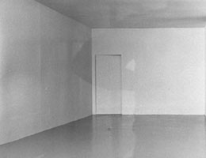
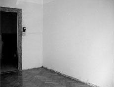
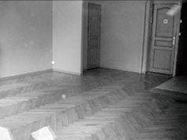
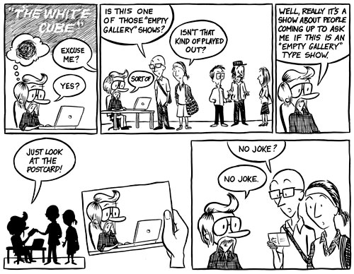

Zoom out:  Emptiness
Emptiness  Nothing
Nothing  Radical Art (Home Page)
Radical Art (Home Page)
Related:  Closed galeries
Closed galeries  Empty spots
Empty spots
Zoom out:  Emptiness
Emptiness  Nothing
Nothing  Radical Art (Home Page)
Radical Art (Home Page)
Related:  Closed galeries
Closed galeries  Empty spots
Empty spots
Empty Rooms
|
||||
Christo Javacheff:
|
 | |||
Robert Irwin: Experimental Situation(Ace Gallery, Los Angeles, 1970)
|
||||
Raphael Juliard:Espaces Vides(Various locations, 2004) "Série d'expositions sans oeuvres, avec des lieux définis mais inaccessibles au public." |

|

|
||
 Thomas Marquet: "The White Cube", 2008 |